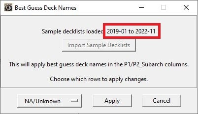
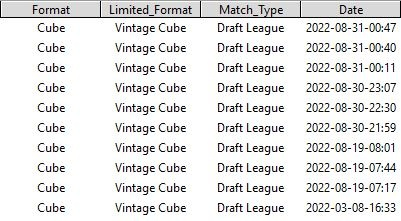

Updating Auxiliary Files
Back to Project Description.
Overview
Auxiliary Files are supplementary files required for certain functions:
- MULTIFACED_CARDS.txt: List of multi-faced cards required for GameLog parsing function. This list is scraped from Scryfall API.
- ALL_DECKS: Sample decklist file required for Best Guess Deck Name function. This file is updated monthly.
- INPUT_OPTIONS.txt: List of formats, event types, etc. for menu options.
How to Update
Update these files by going to Data -> Update Auxiliary Files.
- This will download the latest versions of the auxiliary files from the MTGO-Tracker GitHub repository.
- This should be run every month or so (the ALL_DECKS file is updated at the beginning of every month).
- The previous version of these files will be renamed and stored in case there is a problem with the new files.
Confirm the file is up-to-date in the Best Guess Deck Name update window.

Process to Generate ALL_DECKS File
Decklists are scraped from MTG Goldfish and stored as .txt files separated by Month and Format. These lists are then stored in a Python dictionary against which MTGO-Tracker can compare the cards it 'sees' being played in a match.
MTGO-Tracker will then calculate the "most similar" decklist and update your database with that deck name.
Accuracy
The Best Guess Deck Name function can provide a decent first pass attempt at updating your recently imported Matches.
That being said, the accuracy of the deck names it comes up will depend on factors like:
- The number of cards played during a match.
- Consistency of deck names (e.g. Izzet/UR, Storm/ANT/Ad Nauseum Tendrils)
- Consistency of MTG Goldfish formatting (e.g. 8-cast vs 8 Cast)
Constructed vs. Limited Matches
Limited decks will simply be named according to the colors they play.
MTGO-Tracker can not distinguish between constructed and limited matches. Be sure to update the format of your limited matches before running Best Guess Deck Name or your limited matches will likely get updated with Standard format deck names.

×